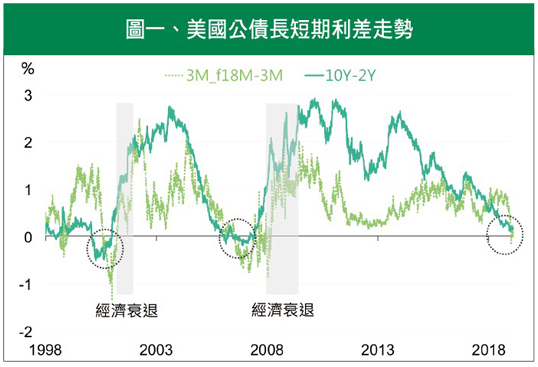
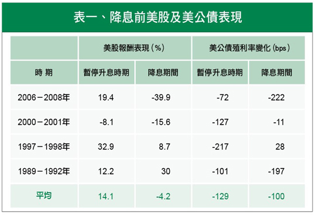
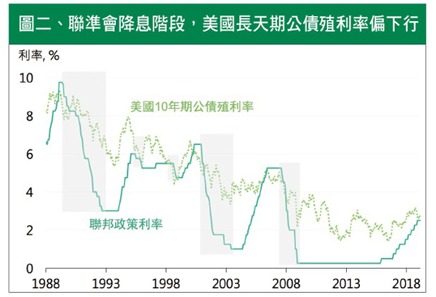

經濟衰退狼煙起
寬鬆政策壓壓驚
聯準會政策漸趨寬鬆，緩減經濟壓力，增添股市動力，好景能延續多久？
當經濟成長放慢、衰退氣息漸濃時，「長短利差」便如同街道上的熱門抖音歌曲，不停地輪播。多數情況下，長天期美國公債的殖利率都高於短天期，當兩者出現反轉時，通常伴隨經濟趨緩，未來半年至18個月後股市下滑風險上升，經濟衰退進入倒數。
長短利差反轉，衰退狼煙升起
利差本身非實質數據，本質主要來自於預期。短率反應聯準會政策動向，隨貨幣政策偏緊而走揚，資金成本壓力隨之上升。長率代表投資人對未來景氣的想法，預期後續景氣樂觀時，則願意支付較高的時間成本。利差縮窄暗示資金成本上升的速度，勝於民眾對景氣的樂觀程度。
去年6月美國10年期減2年期的公債利差靠近30點 (1點為0.01%) 時，聯準會為穩定市場情緒，發佈了一篇報告：「Don’t Fear The Yield Curve」，以3個月國庫券殖利率，其18個月後期貨利率與即期利率相減，強調為更具意義的觀察指標。有趣的是，新指標於去年12月出現反轉，衰退的狼煙似乎已悄悄升起 (見圖1)。

註：10Y-2Y指美國10年期減2年期公債殖利率；3M_f 18M-3M為3個月國庫券的18個月的遠期利率減即期利率。
資料來源：Bloomberg。
歐美央行接連出招，是福還是禍？
繼主要央行紛紛下調經濟展望後，3月7日歐央推新一輪定向長期再融資 (TLTRO-III)，並釋出年底前將維持利率不變，有別於先前2019年下半年可能升息的預期，政策調整出乎預料，安撫人心的味道濃厚。
同月21日聯準會亦下調今年升息路徑，相較於先前2碼升息可能，今年將維持利率不變，並於9月停止縮表。歐美央行接連釋出政策善意，緩減經濟下行壓力，但此次央行表現更加積極，暗示景氣放緩疑慮漸升溫。
美國房市及景氣下滑，美股獲利從去年兩成佳績，滑落至個位數成長率，預期經濟數據將持續趨緩，股市為什麼還漲得動？年初來美中戰火漸息，及主要央行貨幣政策態度漸趨寬鬆，提供金融市場樂觀氛圍，在沒有基本面支持下，股市多頭如履薄冰。
降息前美股仍有表現機會，公債可為避險選擇
以史為鏡，回到上一波大多頭的終結。2007年初股市由盛轉衰，到了第4季，在央行偏寬鬆與政府的穩市政策利多下，美股歷經反彈。不過，此番好景僅維持3個月。
回顧過去暫停升息期間，觀察美國股市與公債的變化，發現降息前股市倚靠政策紅利，確實仍有表現機會，但漲跌不一，下跌風險尚存，反觀公債表現相對穩定 (見表1)。
如果投資人對金融前景感到不踏實，美國長天期公債提供另一個選擇。當景氣下滑，聯準會因應經濟衰退，寬鬆貨幣政策力道將增強，公債殖利率同步走低，可藉由債券殖利率下滑、價格上漲，來規避股市下跌的不確定性 (見圖2)。

資料來源：Bloomberg。

註：灰色區塊為連準會降息期間。
資料來源：Bloomberg
股市回歸基本面，可漸增持公債作為護身符
展望美股，景氣降溫連動企業獲利成長轉弱，政策紅利所帶動的股市多頭能維持多久，誰也說不準。反過來看，隨基本面轉弱，聯準會寬鬆政策立場將逐漸明顯，使美國長天期公債殖利率走低。政策紅利依然提供短線股市反彈動力，僅續航力存在未知數，可漸增持美國長天期公債部位，以規避未來的不確定性。經濟衰退倒數雖不急於擔心，只要策略正確，投資人辛苦撙積的資產，一樣能逢凶化吉。
【揭露事項與免責聲明】
本報告為國泰世華銀行（下稱“本公司”）提供尊貴理財客戶之參考資料，並非針對特定客戶所作的投資建議，且在本報告撰寫過程中，並未考量讀者個別的財務狀況與需求，故本報告所提供的資訊無法適用於所有讀者。
本報告係根據本公司所取得的資訊加以彙集及研究分析，本公司並不保證各項資訊之完整性及正確性。本報告中所提出之意見係為本報告出版當時的意見，邇後相關資訊或意見若有變更，本公司將不會另行通知。本公司亦無義務持續更新本報告之內容或追蹤研究本報告所涵蓋之主題。本報告中提及的標的價格、價值及收益隨時可能因各種本公司無法控制之政治、經濟、市場等因素而產生變化。本報告中之各項預測，均係基於對目前所得資訊作合理假設下所完成，所以並不必然實現。本報告不得視為買賣有價證券或其他金融商品的要約或要約之引誘。
國泰金融集團（下稱“本集團”）所屬各公司可能個別基於特定目的且針對特定人士出具研究報告、提供口頭或書面的市場看法或投資建議（下稱“提供資訊”），鑑於提供資訊之單位、時間、對象及目的不同，本報告與本集團其他單位所提供資訊可能有不一致或相牴觸之情事；本集團所屬公司從事各項金融業務，包括但不限於銀行、保險、證券經紀、承銷、自有資金投資、資產管理、證券投資信託等。本集團各公司對於本報告所涵蓋之標的可能有投資或其他業務往來關係，各公司從事交易之方向亦可能與本報告不一致，讀者應審慎評估自身投資風險，自行決定投資方針，不應以前述不一致或相抵觸為由，主張本公司或本集團其他成員有侵害讀者權益之情事。